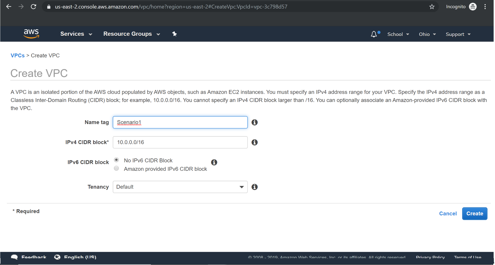
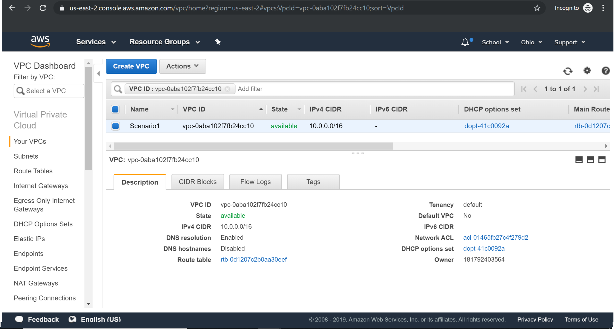
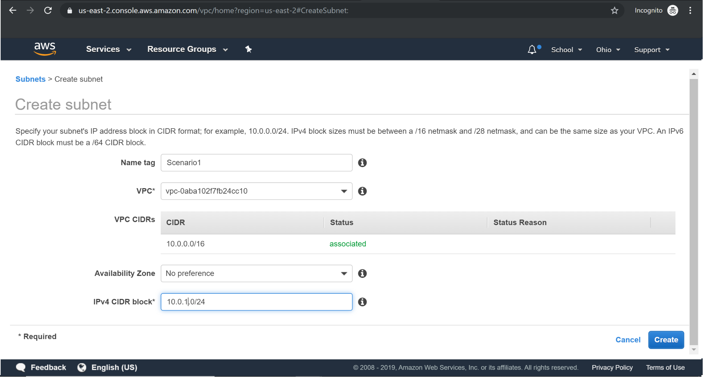
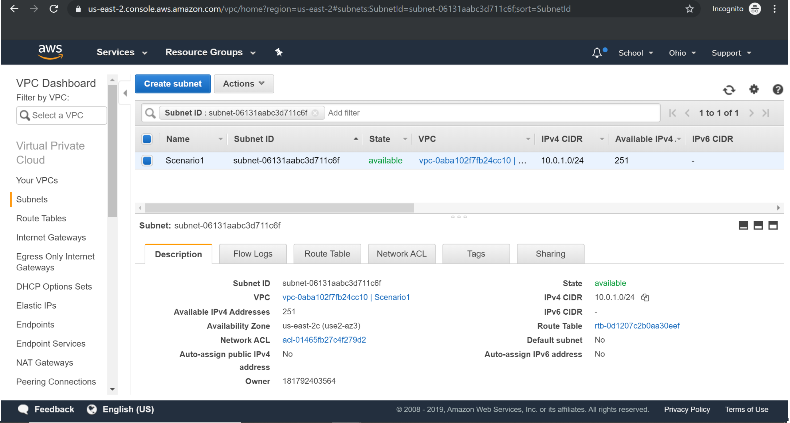
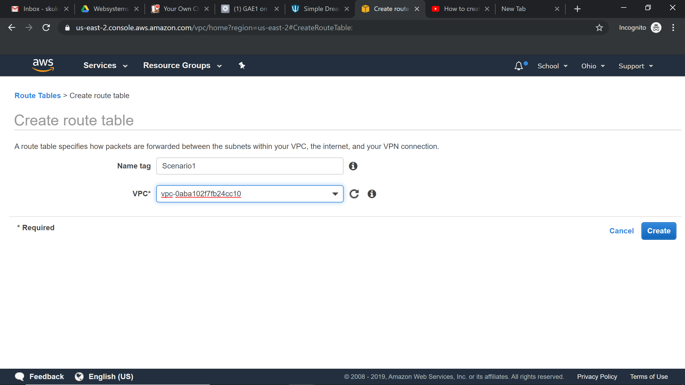
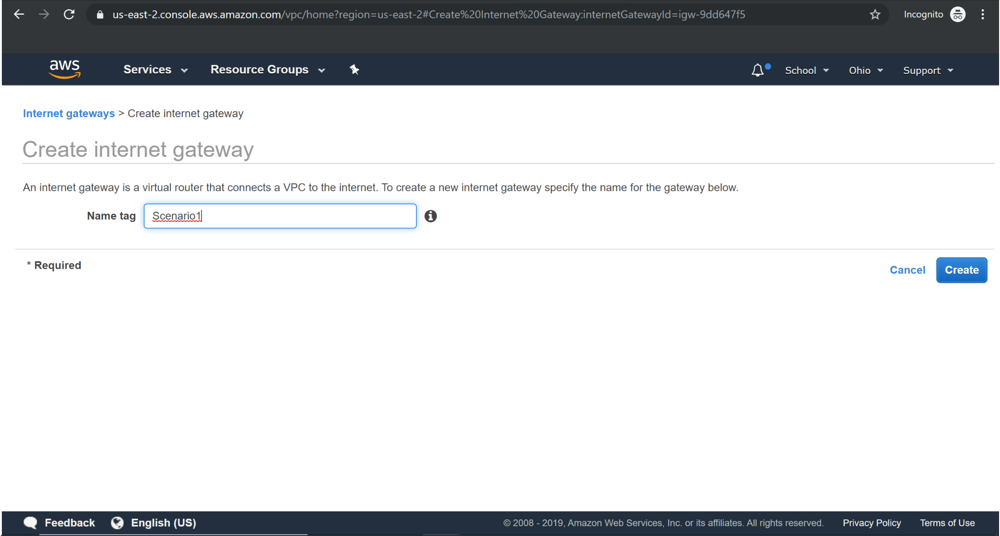
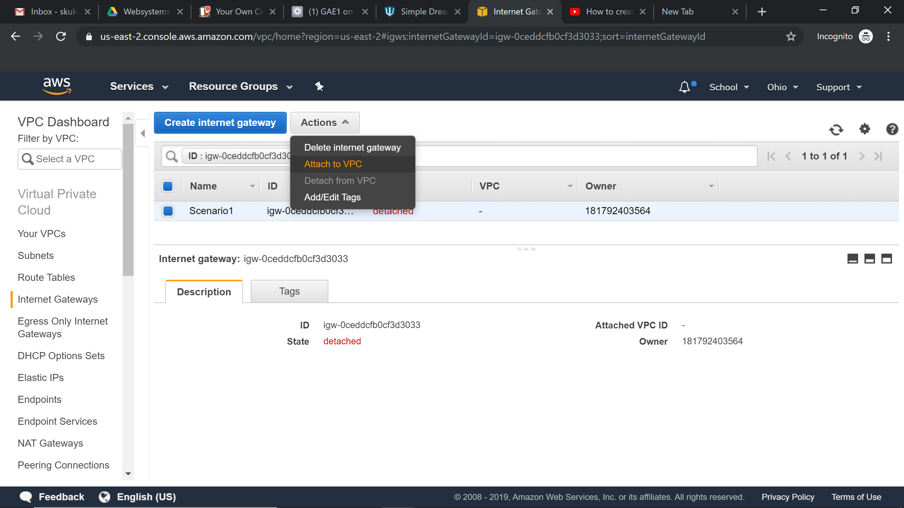
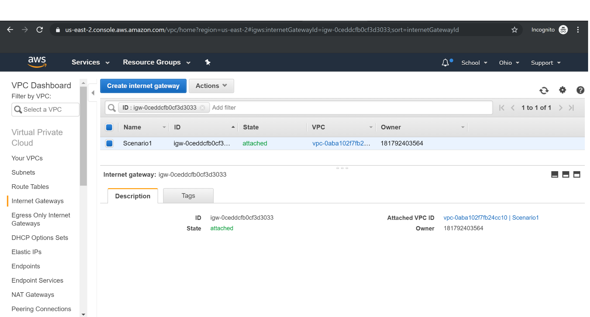
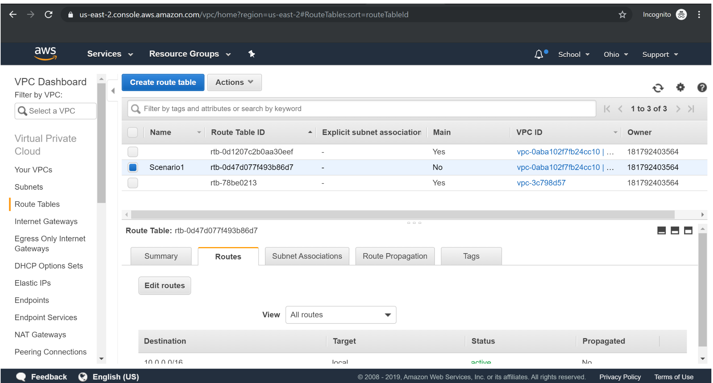
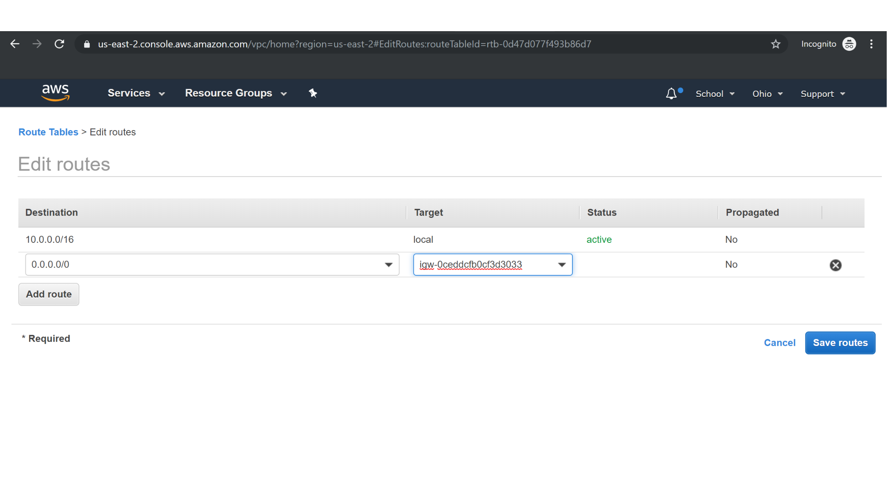

AWS -Virtual Private Cloud
VPC Scenarios:
While creating a VPC, there are 4 types of VPC configurations that you can proceed with. We’ll describe them further now
Scenario1: VPC with a single subnet
This scenario is typically used to deploy a blog or a personal website. This VPC configuration is not recommended for production workloads in Enterprises. Configuration: Configuration consists of VPC with Public subnets, IGW with a route to the internet also attached to the Route table of the subnet. Additional configuration might include EC2 servers/Instances with public IP addresses/ Elastic IPs.

Creating VPC:

Creating Subnet:

Creating RouteTable:

Creating Internet Gateway
Attaching Internet Gateway to VPC


Adding Internet Gateway to VPC

Associating Custom Route table to Public subnet :

Scenario2: VPC with a private and public subnet
As the name indicates this scenario is used to host a real-time customer-facing website. This VPC configuration is recommended for production workloads in Enterprises. Configuration: Configuration consists of VPC with Public subnets, IGW with a route to the internet also attached to the Route table of the subnet, NAT gateway for databases to download updates. Additional configuration might include EC2 servers/Instances with public IP addresses/ Elastic IPs, Load balancers, database servers, auto-scaling groups, AMI’s, etc. Important note:
● Configure Database servers only in Private subnets for additional security, because Database servers should be protected and only authorized users must be given access to those servers.
● All connections to the database will be internal/within the VPC. So, it’d be ideal and a best practice from industry to always launch these sensitive database servers in a Private subnet.

It would be an addition to Scenario 1 along with private subnet and Nat gateway.
Creating Private subnet :

Creating Nat Gateway:
Nat Gateway should always be associated to the public subnet.

Creating New Route Table for Private Subnet:
A new route table is created for the Private subnet and it is associated with Nat Gateway.


Associating the Nat Gateway to Route Tables:

Scenario3: VPC with public and private subnet and a VPN access
This scenario is an extension to the second, along with all the benefits and features of the above scenario, you’ll have an additional VPN set up- VPN helps employees to securely connect to AWS resources over an encrypted tunnel from their corporate offices.
Configuration: The configuration for this scenario involves Public subnets, IGW, NAT gateway for databases to download updates. EC2 servers/Instances with public IP addresses/ Elastic IPs, Load balancers, database servers, auto-scaling groups, AMI’s, S3, etc. There has to be a Customer Gateway configured on the customer’s end and a Virtual Private Gateway configured on the AWS VPC side to establish a VPN connection.
Now we would be creating the Virtual private gateway, customer gateway and VPN connection

It would be an addition to Scenario 2 ,Now we would be creating the Virtual private gateway, customer gateway and VPN connection
Creation of Virtual private gateway :

Assigning vpg to vpc :

Creating Customer gateway:
Give some random ip address

Creating VPN Connection:

Creating Route table with VGW:


Scenario 4: VPC with private subnet only and a VPN access
The difference between the above scenario and this is that the resources in AWS VPC can only communicate with the Corporate/Enterprise Network through a VPN and can’t communicate with the Internet/external world directly. This is because there’s no IGW attached to the subnets in this scenario. This is typically used for extending the corporate network into AWS without any public internet access.
Configuration: Requires VGW configured on AWS VPC and CGW on the customer’s side. Along with this, you may also have ELB, EC2, auto-scaling and database servers in the Infrastructure.

This is same as previous scenario 3 except that public subnet along with internet gateway are not present.